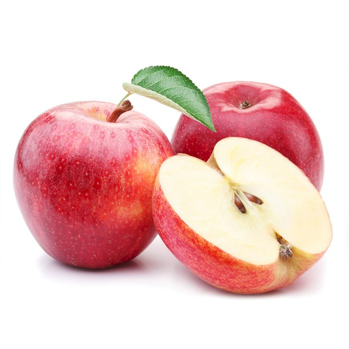

Beneficios de consumir frutas frescas

Consumir frutas frescas diariamente puede aportar diferentes nutrientes importantes para nuestro organismo. Las frutas contienen vitaminas, minerales, fibra y agua, elementos que contribuyen a mantener una alimentación equilibrada.
Además, incorporar frutas variadas en nuestra alimentación permite disfrutar diferentes sabores y aprovechar los nutrientes presentes en cada una de ellas.
En HuertoHogar buscamos acercar frutas frescas y naturales directamente desde el campo hasta los hogares.
Volver al Blog